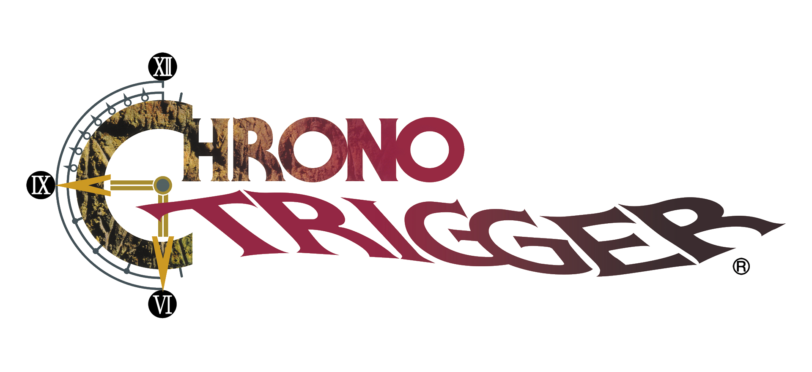
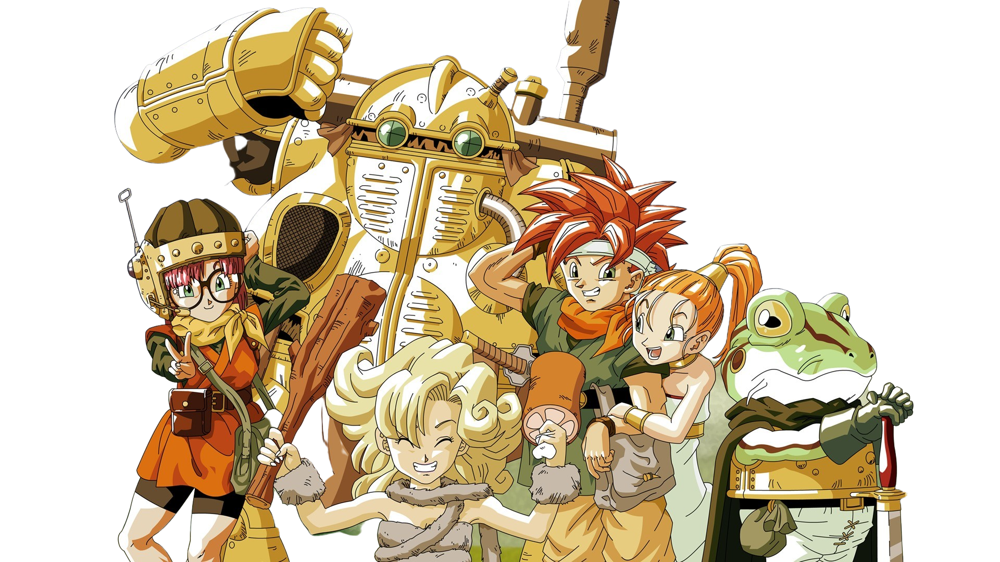

Chrono, Lucca e Marle se envolvem em um acidente com uma máquina do tempo. A partir disso, o trio viaja por várias épocas e com isso, descobrem que há um futuro terrível a espera deles.
X
Chrono, Lucca e Marle se envolvem em um acidente com uma máquina do tempo. A partir disso, o trio viaja por várias épocas e com isso, descobrem que há um futuro terrível a espera deles.